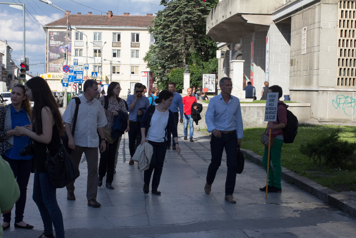
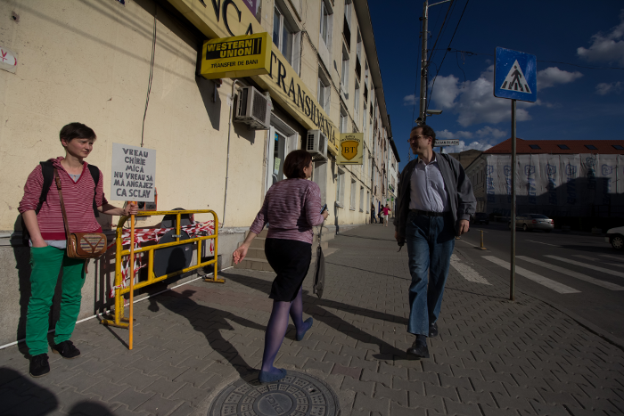
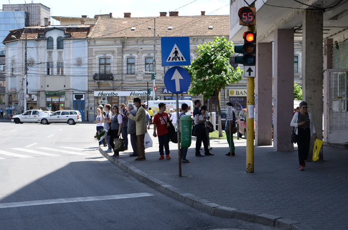
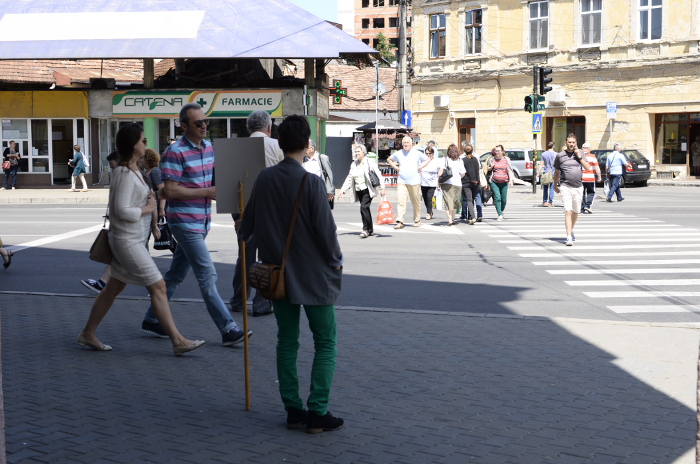
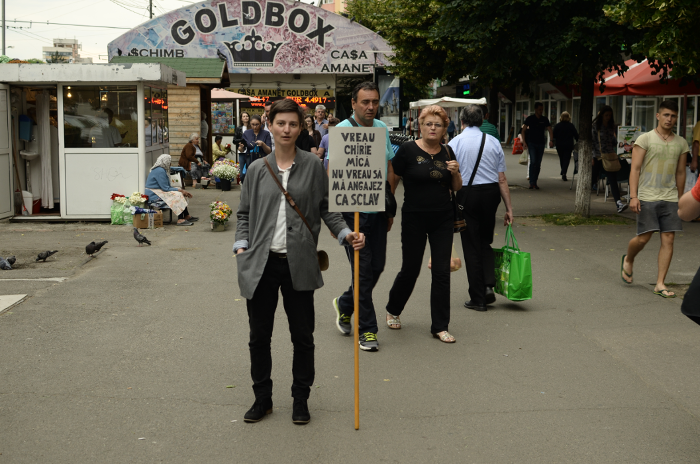
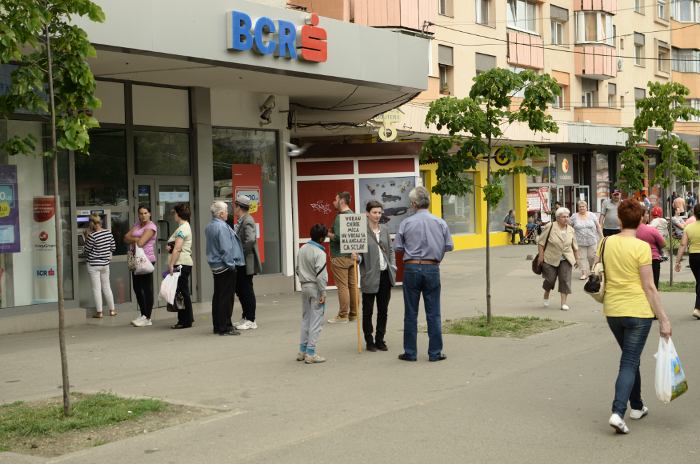

VREAU CHIRIE MICA NU VREAU SA MA ANGAJEZ CA SCLAV


Ziua 1
23.05.2016
Locatie: Zona Casei de Cultura a Studentilor


Ziua 2
08.06.2016
Locatie: Zona Piata Mihai Viteazul


Ziua 3
19.06.2016
Locatie: Zona Piata Marasti
Happening 2016
Problema chiriilor, a locuintelor sociale este una acuta si aproape tabu in discursul locuitorilor din Cluj. Locuintele sociale se construiesc intr-un ritm foarte lent, iar cei doritori sunt amanati sau nu sunt eligibili legal, iar chiriile cresc, intr-un oras in continua dezvoltare. Cererea mare vine din partea studentilor, care pot sa se asocieze si sa plateasca un apartament mare, deci o suma mare si a celor care castiga peste salariul mediu. Pana si cei din zonele rurale adiacente Clujului tind sa se alinieze la sumele mari cerute pentru o chirie, chiar daca conditiile sunt precare.